DROPPER
A Locative music app user interface design that started with a two-member team then ended up solo. This is the final project for ARTS 244: Interaction I.
INTRO
The fanscination of how people store and retrieve geolocation data helps with a better understanding of our surroundings, and the landscape that influence people in generations. And music also plays an important part to help shaping the place. The main idea of DROPPER is to combine these two concepts of geolocation and music together to create new experience.
WIREFRAME
PROTOTYPE


 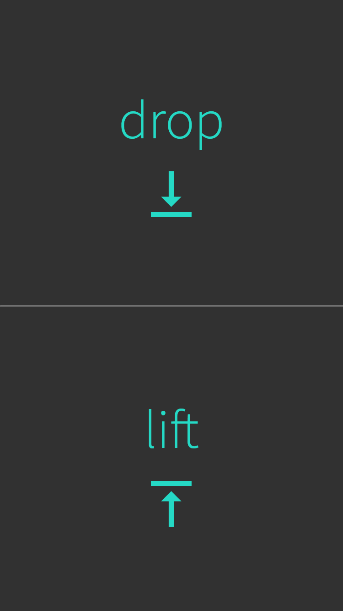
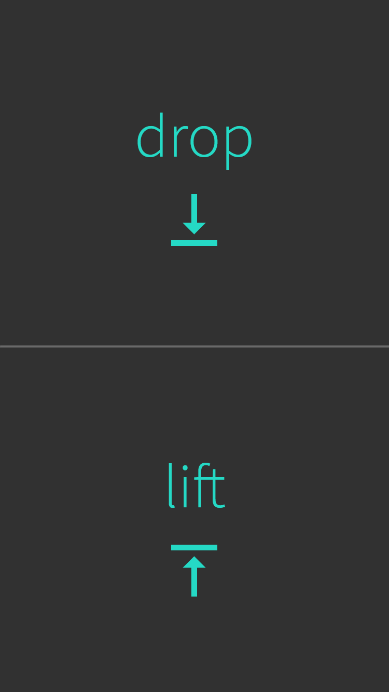


 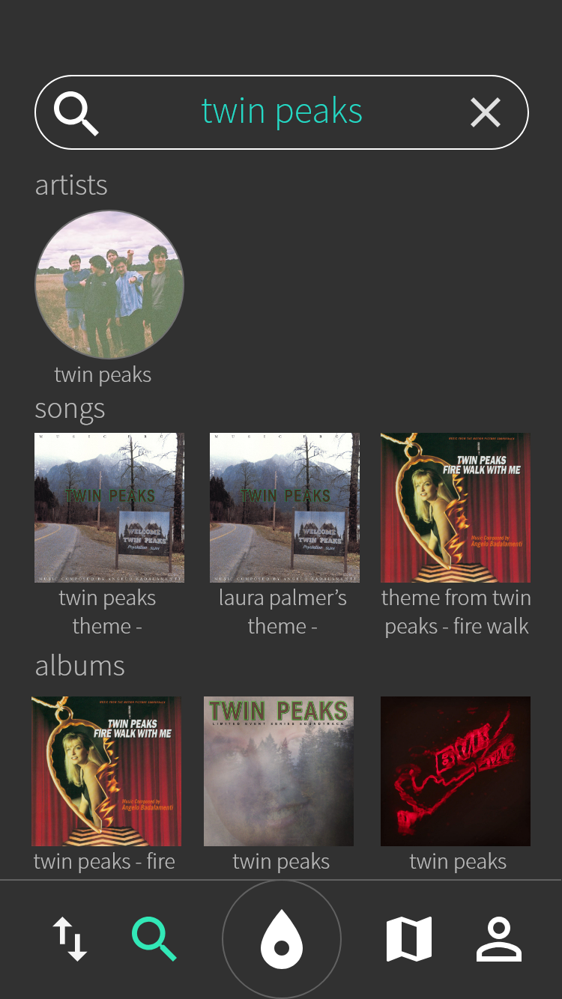
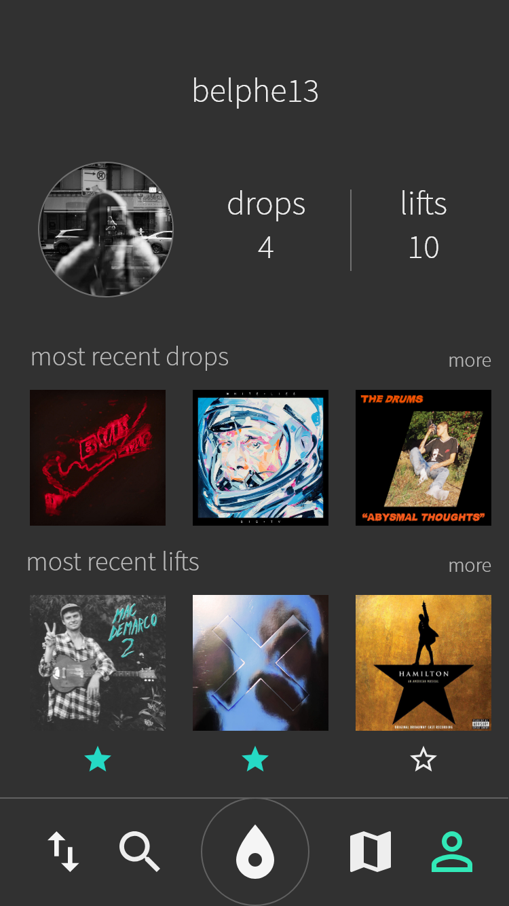
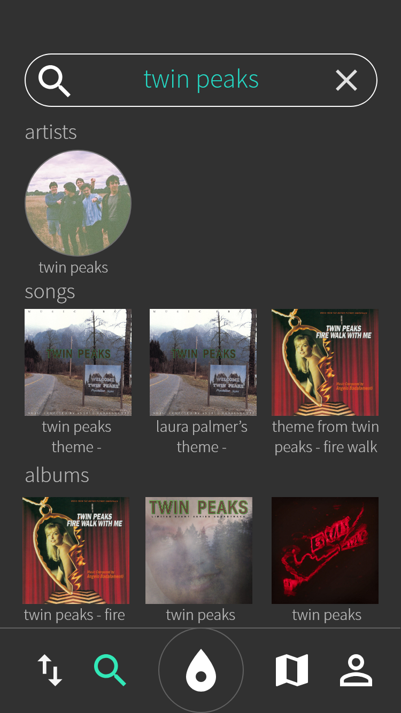
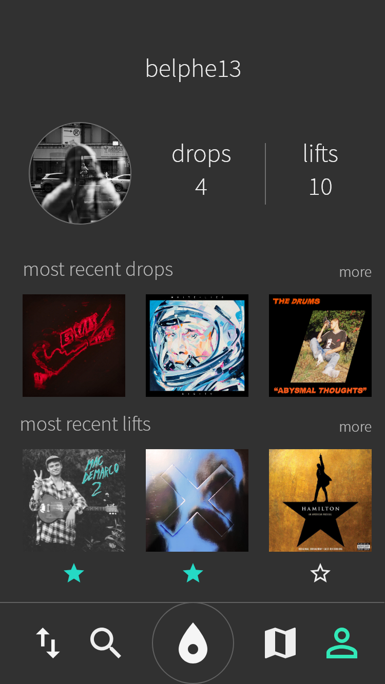
 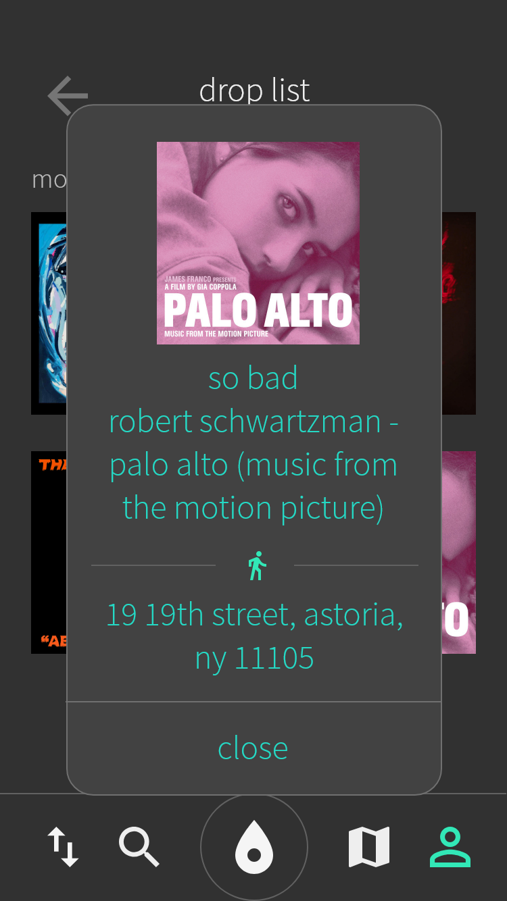
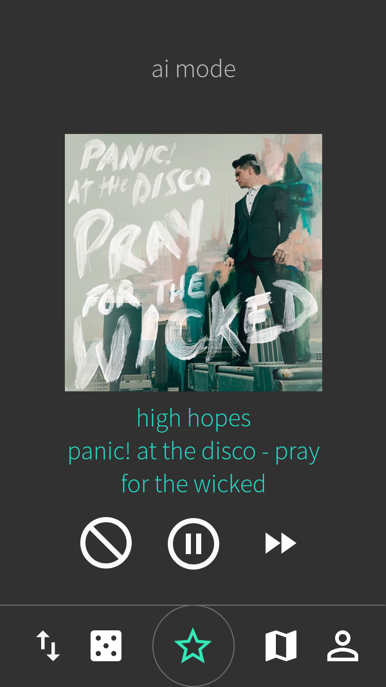
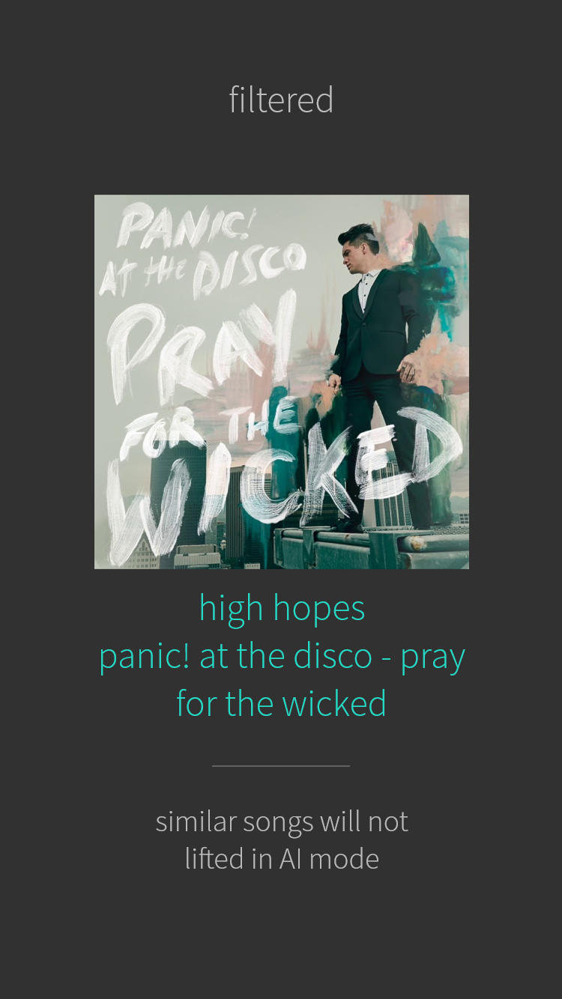
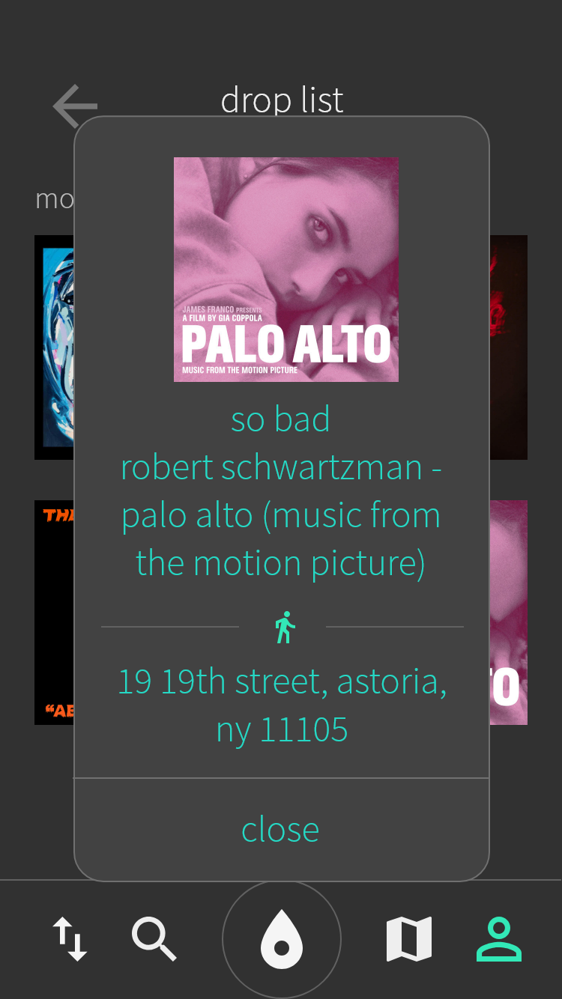
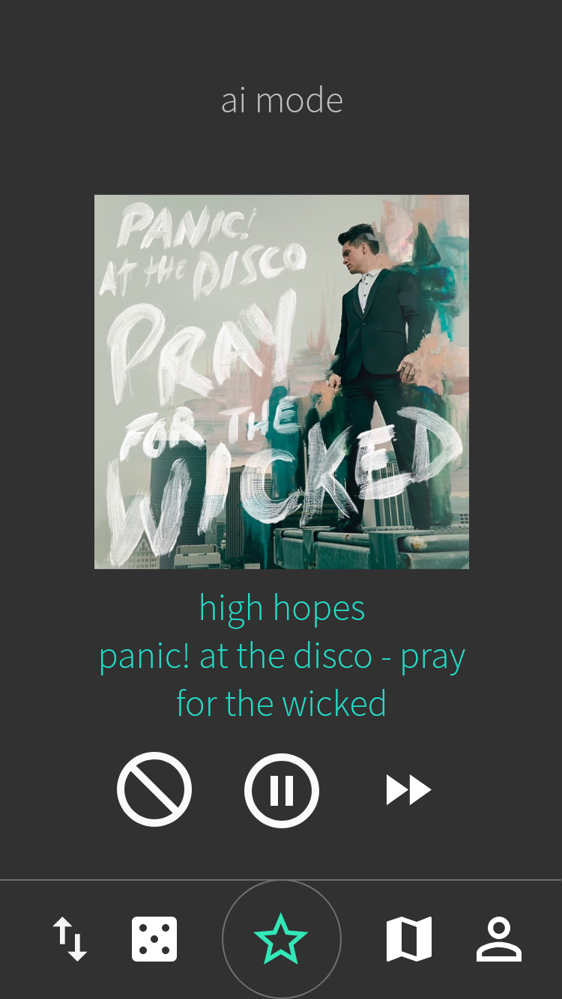
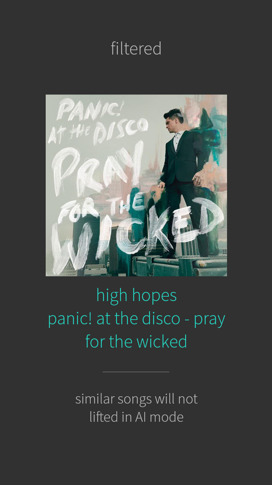
 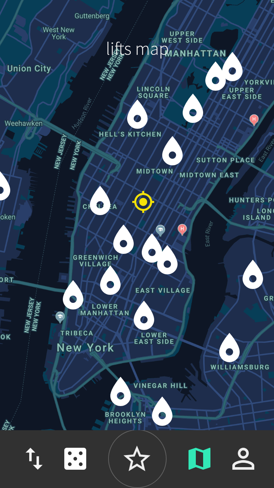
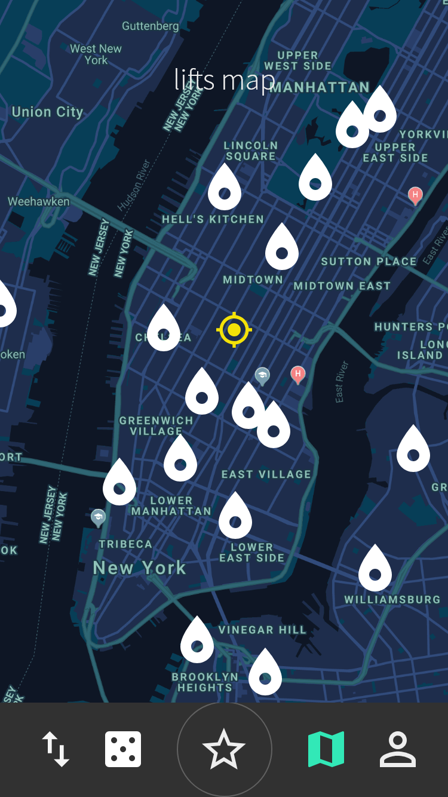